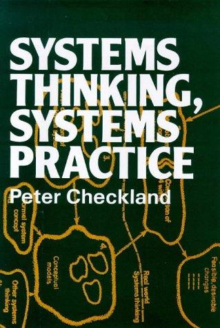
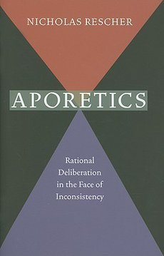

Módulo 05 / Apartado 1 de 5
De quién es el problema
Antes de ningún método hay que saber qué se está resolviendo y para quién. Las seis palabras, CATWOE de Checkland con su letra decisiva, y qué se hace cuando las premisas que te han dado no pueden cumplirse todas.
El error que se comete antes de empezar
Casi todos los proyectos que se atascan lo hacen por la misma razón, y no es técnica. Dos personas están resolviendo problemas distintos y creen que discuten sobre la solución del mismo. Llevan tres meses así. Nadie lo ha dicho porque nadie lo sabe.
Este apartado va de las herramientas que hacen aflorar eso antes de gastar el presupuesto. Son las más aburridas del módulo y las que más dinero ahorran.
Las seis palabras
Es el método más simple del temario y no tiene libro: es de la casa. Qué, por qué, cuándo, cómo, dónde, quién. Suena a las cinco W del periodismo porque es exactamente eso, y suena a poca cosa hasta que lo aplicas en serio.
Lo que lo convierte en método es la regla de uso: no se pasa a la siguiente palabra hasta que la anterior tiene una respuesta que se pueda escribir en una línea y que nadie en la sala contradiga. Casi siempre revienta en la segunda.
CATWOE: el mismo problema visto por seis
La versión seria de lo anterior es de Peter Checkland, ingeniero de sistemas británico que en los años setenta se dio cuenta de algo incómodo: los métodos que funcionaban en una fábrica dejaban de funcionar en cuanto había personas con intereses distintos.
La distinción de Checkland no es «técnico» contra «humano». Es más precisa: en un problema duro hay acuerdo previo sobre qué contaría como solución. Un puente tiene que aguantar; nadie discute eso, y todo el trabajo es optimizar el camino.
En un problema blando ese acuerdo no existe, y por tanto el objetivo es el problema. Cada actor define el sistema de otra manera, y su definición no es un error a corregir: es una posición legítima que responde a su visión del mundo.
Y la consecuencia dura: si empiezas por optimizar, ya has elegido en silencio la definición de alguien. Normalmente la tuya.
Su metodología se llama Soft Systems Methodology y su herramienta más portátil es CATWOE, que sirve para construir una root definition: una formulación explícita de qué sistema estás asumiendo cuando dices «el problema es X».

El libro de esto Systems Thinking, Systems PracticeEl libro fundacional de la metodología de sistemas blandos. Además de CATWOE trae el rich picture —un dibujo a mano alzada de la situación, con conflictos y estados de ánimo, y sin notación formal a propósito— y el criterio de aceptación que las metodologías duras se saltan: un cambio tiene que ser a la vez sistémicamente deseable y culturalmente factible — Peter Checkland · 1981
De su aparato hay una pieza más que merece la pena, y es la que resume por qué fracasan los proyectos correctos: Checkland no busca la solución óptima, busca una acomodación. Un cambio que sea a la vez sistémicamente deseable —tiene sentido— y culturalmente factible —esta organización concreta, con esta gente concreta, puede tragarlo—. La segunda condición es la que los métodos duros ignoran, y es la que hunde la mayoría de las recomendaciones bien fundamentadas.
Y cuando no hay salida: la aporía
Hay una tercera situación que no está en ningún temario y que Recuenco dedica una turra entera a explicar. Es cuando el problema no es que falte información ni que haya desacuerdo, sino que todo lo que sabes es razonable y no puede ser todo verdad a la vez.
Aporía viene del griego ἀπορία: literalmente «sin camino», «sin salida». Es un problema que parece insoluble porque hay argumentos igual de convincentes en los dos lados.
En Platón, Sócrates la usaba a propósito: llevaba a su interlocutor a un estado de confusión para que se diera cuenta de que no sabía lo que creía saber. Aristóteles las discute en la Metafísica. Y en el siglo XX la recupera Derrida, para quien la aporía no es un fallo del razonamiento sino una condición del lenguaje mismo.
Recuenco reconoce en la turra que le tuvo manía años, básicamente por la gente que la usaba —«mi odio africano a Derrida y los deconstructivistas»— y que se reconcilió con el concepto a través de Dave Snowden y su dominio del desorden aporético en Cynefin.
El desorden aporético es el centro de Cynefin, el marco que vimos en el módulo 1. Es el estado en el que ni siquiera sabes en qué dominio estás: si tu problema es claro, complicado, complejo o caótico. Y la primera tarea, antes que cualquier método, es salir de ahí. Aplicar la herramienta del dominio equivocado es peor que no aplicar ninguna.
El aparato formal de esto es de Nicholas Rescher, filósofo estadounidense, y su libro sobre el asunto es uno de los hallazgos raros del corpus: aparece enlazado en las turras y no está en ningún programa de máster de gestión del mundo.

El libro de esto Aporetics: Rational Deliberation in the Face of InconsistencyEl manual de qué hacer cuando tus premisas son individualmente razonables y colectivamente imposibles. Rescher formaliza el procedimiento: identificas el grupo aporético, ordenas sus miembros por plausibilidad y sacrificas el más débil. Es filosofía analítica y se nota, pero la operación es exactamente la que hay que hacer en un comité atascado — Nicholas Rescher · 2009
Y el remate de la turra es la parte que conviene subrayar, porque es lo que separa esto del relativismo de barra de bar. Recuenco dice que el sensemaking se enfrenta a la crueldad de la aporía —ese momento en que nada encaja y no hay manera de contrastar— pero que su compromiso con la hipótesis de actuación exige concreción, en lugar de «la juguetona e infantil posición de la subjetividad perpetua».
Sin camino. Pero hay que andar igual, y hay que decir por dónde.
El orden de este apartado, resumido
Sobre todo el «por qué». Si ahí ya no coincidís, para y no sigas: el resto del trabajo sería sobre problemas distintos.
Y las W puestas en columnas, una al lado de la otra. Es media hora y es donde aparecen las incompatibilidades reales.
Si las restricciones que te han dado no pueden cumplirse todas, dilo por escrito y propón cuál se suelta. Que decidan ellos, pero que decidan. Esto es lo que separa a un consultor de un recadero.
Y eso es el apartado siguiente. No antes.
Fuentes de este apartado
Las turras de las que sale
Los libros
El origen de CATWOE y de la metodología de sistemas blandos. Es un libro académico de 1981 y se nota, pero la distinción entre problemas con acuerdo previo sobre la solución y problemas sin él es de las cosas más útiles del temario entero. Hay una retrospectiva del propio autor a los treinta años que resume el aparato y se lee en una tarde.
Aporetics: Rational Deliberation in the Face of InconsistencyNicholas Rescher · 2009El procedimiento formal para decidir cuando tus premisas son incompatibles. Es uno de los hallazgos del corpus: está enlazado en las turras y no aparece en ningún programa de gestión. Kepner-Tregoe, que viene en el apartado 3, es el caso fácil de esto; Rescher es el caso difícil.
The Aporetic Tradition in Ancient PhilosophyGeorge Karamanolis y Vasilis Politis (eds.) · 2018El acompañante histórico del anterior, también enlazado en el corpus. Recorre cómo se usó la aporía en Platón, Aristóteles y los escépticos. Es para quien quiera el contexto; si solo quieres la herramienta, quédate con Rescher.